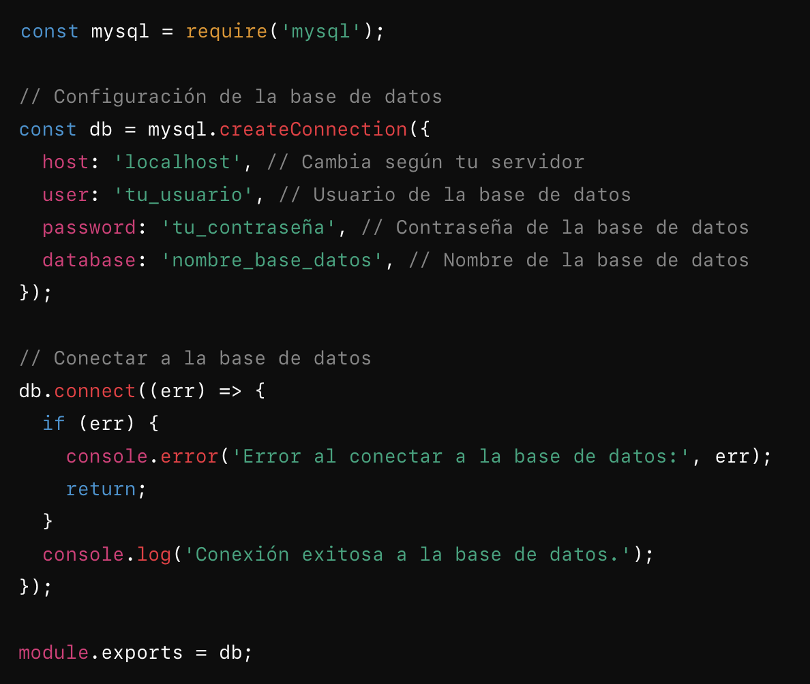
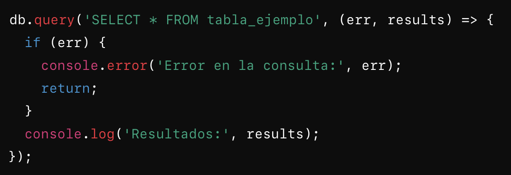

La conexión a una base de datos desde una aplicación web requiere configurar adecuadamente la base de datos y el backend. A continuación, te proporciono los pasos generales y un ejemplo para establecer esta conexión.
1. Preparativos
- Elegir el tipo de base de datos: Puede ser SQL (MySQL, PostgreSQL, SQL Server) o NoSQL (MongoDB, Firebase, etc.).
-
Configurar la base de datos:
- Crear la base de datos y las tablas o colecciones necesarias.
- Configurar el usuario, contraseña y permisos para acceder a la base de datos.
2. Elementos comunes
Algunos datos básicos necesarios para conectar:
- Host: Dirección del servidor (por ejemplo, localhost o IP pública).
- Puerto: Número de puerto (varía según la base de datos: 3306 para MySQL, 5432 para PostgreSQL, etc.).
- Nombre de la base de datos: El nombre que usaste al crearla.
- Usuario y contraseña: Credenciales configuradas para el acceso.
3. Ejemplo de conexión
A continuación, te muestro cómo conectar una base de datos usando Node.js con MySQL:
Configuración de conexión

Uso de la conexión en consultas

4. Buenas prácticas
- Archivo .env: Guarda datos sensibles como usuario, contraseña, y host en un archivo .env para mayor seguridad.
DB_HOST=localhost
DB_USER=tu_usuario
DB_PASSWORD=tu_contraseña
DB_NAME=nombre_base_datos
- Uso de ORM: Considera usar un ORM (como Sequelize para SQL o Mongoose para MongoDB) para manejar la base de datos de manera más eficiente y estructurada.
- Seguridad: Configura reglas de acceso para evitar ataques como SQL Injection y protege los datos sensibles en tránsito usando conexiones cifradas (TLS/SSL).